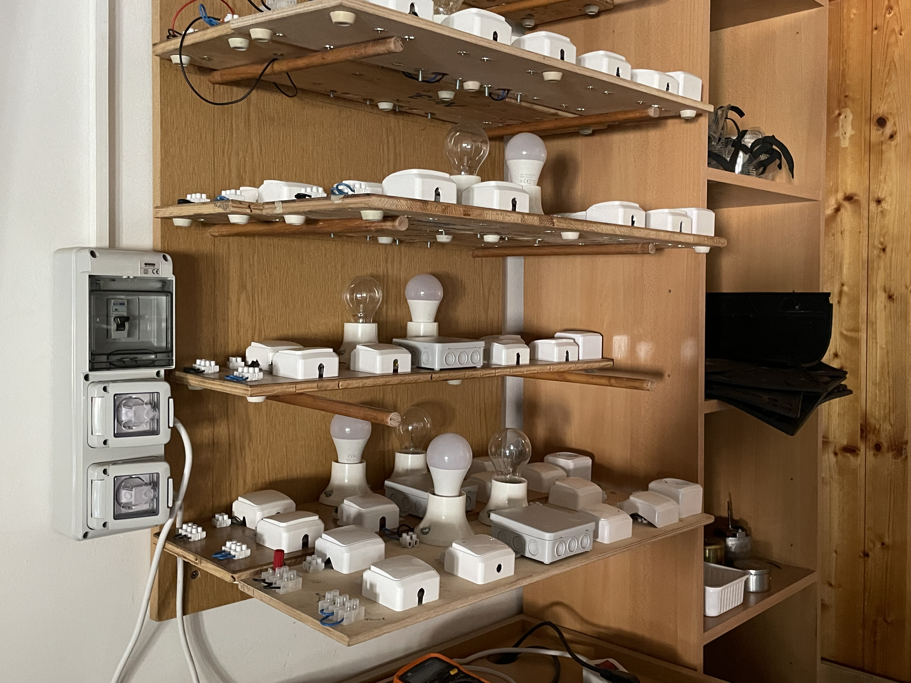
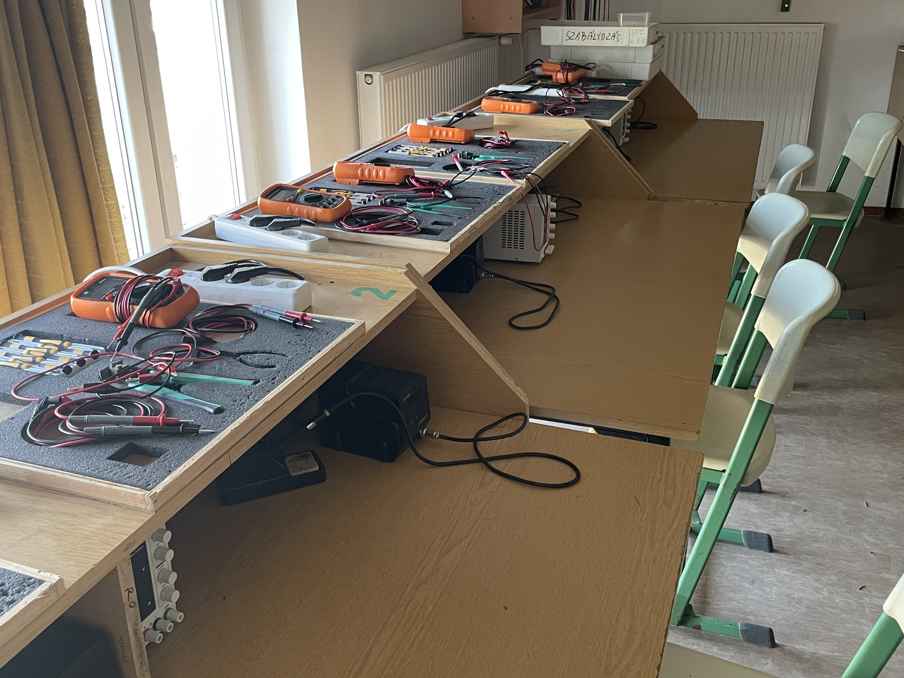

Tantárgy Áttekintése
Az Analóg Áramköri tantárgyban (11. évfolyam) az alapvető elektronikai komponensek és azok praktikus alkalmazása volt a fő téma. Tanulóként különféle analóg áramköri kapcsolásokat szereltünk össze, és megtanultuk a villamos komponensek alapvető működési elvét.
Tanult témakörök:
- Tranzisztorok alkalmazása
- Villanykapcsoló-rendszerek - Csillárkapcsolók és más kapcsolási topológiák
- Forrasztás és mechanikai szerelés
- Analóg jelátalakítás
Projektek és Feladatok
Kivitelezett gyakorlatok:
- Egyszerű LED-es áramkörök - Ellenállás és LED összekapcsolása
- Tranzisztoros kapcsolók - NPN/PNP tranzisztorok vezérlésben
- Csillárkapcsoló rendszer - Párhuzamos kapcsolási topológia gyakorlata
- Forrasztási gyakorlatok - PCB-re szerelt alkatrészek integrálása
- Egyszerű jelerősítő fok - Bipoláris tranzisztor alapú erősítő
- Analóg szűrők - RC tagok alkalmazása jelszűrésben
Áramköri Diagramok és Schemák
Megvalósított áramköri topológiák:
- Egyszerű ellenállás-LED soros kapcsolás
- Tranzisztoros LED-es kapcsoló (szkenner)
- Csillárkapcsoló elektromechanikus relékkel
- RC aluláteresztő szűrő
- Bipoláris tranzisztor alapú jelerősítő
- Forrasztott PCB-re integrált alkatrészek
Labor Fotók

